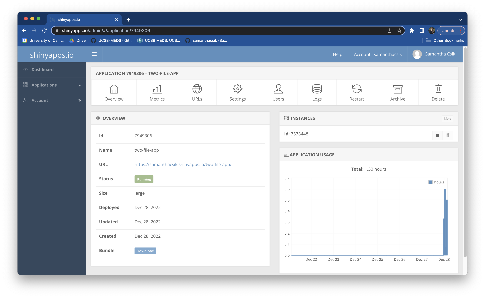

EDS 430: Part 2.3
Deploying apps + improving UX
Week 1 | January 26th, 2024
Deploying apps with shinyapps.io
Sharing your Shiny app with others isn’t so easy when it just lives on your computer (and your R session has to act as the server that powers it). We’ll now learn how to host your app using shinyapps.io, a free service for sharing your Shiny apps online.
Connect your shinyapps.io account to RStudio
Go to shinyapps.io and login or create an account (if you don’t already have one) – I recommend creating your account and logging in using GitHub. To use shinyapps.io, you first need to link your account with RStudio on your computer. Follow the instructions on shinyapps.io when you first create your account to install the {rsconnect} package and authorize your account:
![shinyapps.io displays setup instructions: (1) INSTALL RSCONNECT: The `rsconnect` package can be installed directly from CRAN. To make sure you have the latest version run following code in your R console: `install.packages('rsconnect')`. (2) AUTHORIZE ACCOUNT: The `rsconnect` package must be authorized to your account using a token and secret. To do this, click the copy button below and we'll copy the whole command you need to your clipboard. Just paste it into your console to authorize your account. Once you've entered the command successfully in R, that computer is now authorized to deploy applications to your shinyapps.io account. (3) DEPLOY: Once the `rsconnect` package has been configured, you're ready to deploy your first application. If you haven't written any applications yet, you can also checkout the Getting Started Guide for instruction son how to deploy our demo application. Run the following code in your R console: `library(rsconnect)`, then `rsconnect::deployApp('path/to/your/app')`.](images/part2/shinyapps_setup.png)
Deploy your app to shinyapps.io
Once your account has been authorized, run rsconnect::deployApp("<app_directory_name>") in your console to deploy your app to shinyapps.io. Here, we’ll run rsconnect::deployApp("two-file-app") to deploy the app we’ve been working on.
Once deployed, a browser will open to your application. The URL will take the form: https://username.shinyapps.io/your_app_directory_name. You should also now see an /rsconnect folder within your app’s directory – this is generated when an application bundle is successfully deployed and contains a DCF file with information on the deployed content (i.e. the name, title, server address, account, URL, and time). This /rsconnect folder should be added and committed into version control (i.e. push it to GitHub!) so that future re-deployments target the same endpoint (i.e. your app’s URL).

The shinyapps.io dashboard
Your shinyapps.io dashboard provides tons of information about your application metrics, instance (the virtualized server that your app is hosted on) and worker (a special type of R process that an Application Instance runs to service requests to an application) settings, plan management, and more. The free plan (the plan we’re using here today) allows you to deploy five Shiny apps. You are able to archive and / or delete once-deployed apps to make space for new ones.
Check out the shinyapps.io user guide for more information on hosting your apps on shinyapps.io.
Other ways to host your Shiny apps
shinyapps.io is not the only Shiny app hosting service (though it’s the easiest to get started with and the only one we’ll be covering in detail in this workshop).
Posit also offers the following:
Shiny server is an open source server platform which you can deploy for free on your own hardware. It requires more setup and configuration, but can be used without a fee. The Bren and NCEAS servers are configured with Shiny Server for hosting for some in-house apps.
Posit connect is a paid product that provides an advanced suite of services for hosting Shiny apps, Quarto and R Markdown reports, APIs, and more.
So how should I host my app?
The Bren compute team will work with groups to deploy and maintain apps on in-house servers for up to 6 months after capstone / GP presentations or until they break.
If you and / or your client wish to continue using your app after this time, we recommend one of the following two options:
Preferred: Stick with the free tier of shinyapps.io, if you can! This is by far the most straightforward option that requires no server maintenance for you or your client. If your app exceeds the limitations set by the free tier (e.g. requires more active hours, needs more RAM or instances to support high traffic usage, etc.), you / your client have the option to upgrade to a paid tier – there are 5 paid plan types. Check out the shinyapps.io user guide for more information. Consider setting aside your allocated capstone / GP funds to help support a paid shinyapps.io plan.
If you have a server-savvy client, they may want to deploy / host your app using their own infrastructure. If your client plans to pursue this option, but does not yet have a their own server configured to do so, we recommend directing them to the online instructions for getting started with Shiny Server. PLEASE NOTE that Bren staff (including the compute team) are unable to provide technical support for clients in server configuration and app deployment / maintenance.
IMPORTANT: Hosting on a server means that shiny applications will be prone to breaking as updates to server software are made. It is important to have an application maintenance plan in place. This may mean identifying who is responsible for maintaining code, or even deciding to decommission applications and archive the code repository when appropriate.
A quick note on failed deployments
It’s not uncommon to encounter a failed deployment or even a successful deployment with broken features. The shinyapps.io log should be the first place you turn to for troubleshooting.
A (recent) motivating example:
I was recently walking through these workshop materials and following my own instructions for building App #2 (two-file-app). While the app seemed to working just fine locally, the deployment wasn’t so happy. . . rather than seeing a trout scatterplot and penguin histogram, a red error message which read, Error: An error has occurred. Check your logs or contact the app author for clarification, appeared instead:
Check the deployment log!
Heed the error message! After heading over to shinyapps.io deployment log, we (pretty quickly) see the source of the error: Warning: Error in myCustomTheme: could not find function "myCustomTheme":
Sure enough. . . myCustomTheme() is missing
While I’m not sure exactly how myCustomTheme() disappeared from global.R – it’s possible I accidentally deleted it, but had it stored in my global environment so that my app still ran fine locally – adding it back in, then redeploying lead to a fully functioning, deployed application:
Improving user experience
Our two-file-app is looking pretty good! It’s functional and deployed via shinyapps.io. Next, we’ll focus on making some minor tweaks that can help to improve usability
Learning Objectives - App #2 (two-file app, updated)
By the end of this section, you should:
understand how to provide users with helpful error messages using validate()
know how to add customizable loading animations to alert users when reactive objects are re-rendering
know how to add alternate (alt) text to rendered plots
understand how to republish an app using shinyapps.io
Packages introduced:
{shinycssloaders}: add loading animations to shiny outputs
Roadmap for App #2 (v2)
We’ll be refining our two-file app with a focus on creating a more user-friendly experience. When finished with v2, we’ll have added:
(a) user-friendly validation error messages that appear when widgets are used to deselect all data
(b) loading animations for both two reactive plots
(c) alternate (alt) text for all data visualizations
Take out any guesswork for your app’s users
It’s important to remove any possible points of confusion for successfully using your app.
In version 1 of our published app, you’ll notice that users are able to (1) Deselect All data using the pickerInputs for both the trout and penguin plots, and (2) “uncheck” both clear cut forest and old growth forest sampling section buttons using the checkboxGroupInput. When any of these actions are taken by the user, all data are removed from the plot, leaving a completely blank box behind.
While this response is expected (and normal), we can generate a user-friendly validation error message to provide clear guidance to our users on what is expected by the app in order to display data.
Writing validation tests
validate() tests a condition and returns an error if that conditions fails. It’s used in conjunction with need(), which takes an expression that returns TRUE or FALSE, along with a character string to return if the condition is FALSE.
Place your validation test(s) at the start of any reactive() or render*() expression that calls input$data.
For example, we can add two validation tests inside the reactive that generates our trout_filtered_df – we’ll need two separate validation tests, one for each of our inputs where users can deselect all data.
~/two-file-app/server.R
server <- function(input, output) {
# filter for channel types ----
trout_filtered_df <- reactive({
validate(
need(length(input$channel_type_input) > 0, "Please select at least one channel type to visualize data for."),
need(length(input$section_input) > 0, "Please select at least one section (clear cut forest or old growth forest) to visualize data for.")
)
clean_trout |>
filter(channel_type %in% c(input$channel_type_input)) |>
filter(section %in% c(input$section_input))
})
# ~ additional code omitted for brevity ~
}& Exercise 4: Add a validation test for your penguin histogram
To Do:
Construct a validation test that displays a clear but succinct message when a user deselects all islands using the pickerWidget
Tips:
Despite having two inputs, we only need one validation test for our Penguins plot. Why is this?
See next slide for a solution!
Exercise 4: A solution
~/two-file-app/server.R
server <- function(input, output) {
# filter for channel types ----
trout_filtered_df <- reactive({
validate(
need(length(input$channel_type_input) > 0, "Please select at least one channel type to visualize data for."),
need(length(input$section_input) > 0, "Please select at least one section (clear cut forest or old growth forest) to visualize data for.")
)
clean_trout |>
filter(channel_type %in% c(input$channel_type_input)) |>
filter(section %in% c(input$section_input))
})
# trout scatterplot ----
output$trout_scatterplot_output <- renderPlot({
ggplot(trout_filtered_df(), aes(x = length_mm, y = weight_g, color = channel_type, shape = channel_type)) +
geom_point(alpha = 0.7, size = 5) +
scale_color_manual(values = c("cascade" = "#2E2585", "riffle" = "#337538", "isolated pool" = "#DCCD7D",
"pool" = "#5DA899", "rapid" = "#C16A77", "step (small falls)" = "#9F4A96",
"side channel" = "#94CBEC")) +
scale_shape_manual(values = c("cascade" = 15, "riffle" = 17, "isolated pool" = 19,
"pool" = 18, "rapid" = 8, "step (small falls)" = 23,
"side channel" = 25)) +
labs(x = "Trout Length (mm)", y = "Trout Weight (g)", color = "Channel Type", shape = "Channel Type") +
myCustomTheme
})
# filter for island ----
island_df <- reactive({
validate(
need(length(input$penguin_island_input) > 0, "Please select at least one island to visualize data for.")
)
penguins %>%
filter(island %in% input$penguin_island_input)
})
# render the flipper length histogram ----
output$flipperLength_histogram_output <- renderPlot({
ggplot(na.omit(island_df()), aes(x = flipper_length_mm, fill = species)) +
geom_histogram(alpha = 0.6, bins = input$bin_num) +
scale_fill_manual(values = c("Adelie" = "darkorange", "Chinstrap" = "purple", "Gentoo" = "cyan4")) +
labs(x = "Flipper length (mm)", y = "Frequency",
fill = "Penguin species") +
myCustomTheme()
})
} # END serverAdd loading animations to re-rendering outputs
The {shinycssloaders} package makes it easy to add visual indicators to outputs as they’re loading or re-rendering. This can be particularly helpful if you have outputs that take more than a second or so to render – it alerts users that their updated inputs were recognized and that the app is working to re-render outputs.
Check out the demo app to start designing your own “spinner” (choose style, color, size).
We can pipe the withSpinner() function directly into our plotOutputs in ui.R (be sure to load the package in global.R first) – here, we define the spinner color and style (there are 8 different spinner types to choose from) and adjust the size of the penguin plot spinner.

Include alt text for all data visualizations
Alt text are written descriptions added to images, and importantly, to data visualizations, to help more users understand the content. Assistive technologies (e.g. screen readers) read alt text out loud for users to hear. When alt text is successfully added, the alt tag (along with your text) should appear in the HTML (right click on your app’s data viz to Inspect and ensure that it was added).
We’ll talk a bit more about alt text later on, but for now we can add alt text easily to our data visuzliations using the alt argument. Place this outside of the {} but inside the () of renderPlot{()}. For example, we can add alt text to our trout and penguin plots in server.R:
~/two-file-app/server.R
# render trout scatterplot ----
output$trout_scatterplot <- renderPlot({
ggplot(trout_filtered_df(), aes(x = length_mm, y = weight_g, color = channel_type, shape = channel_type)) +
geom_point(alpha = 0.7, size = 5) +
scale_color_manual(values = c("cascade" = "#2E2585", "riffle" = "#337538", "isolated pool" = "#DCCD7D",
"pool" = "#5DA899", "rapid" = "#C16A77", "step (small falls)" = "#9F4A96",
"side channel" = "#94CBEC")) +
scale_shape_manual(values = c("cascade" = 15, "riffle" = 17, "isolated pool" = 19,
"pool" = 18, "rapid" = 8, "step (small falls)" = 23,
"side channel" = 25)) +
labs(x = "Trout Length (mm)", y = "Trout Weight (g)", color = "Channel Type", shape = "Channel Type") +
myCustomTheme()
},
alt = "A scatterplot of the relationship between cutthroat trout lengths (mm) and weights (g). Trout tend to be longer, but weigh less in waterways within the old growth forest. Trout tend to be shorter, but weigh more in waterways within the clear cut forest."
) # END render trout scatterplot
# render flipperLength hisogram ----
output$flipperLength_histogram_output <- renderPlot({
ggplot(na.omit(island_df()), aes(x = flipper_length_mm, fill = species)) +
geom_histogram(alpha = 0.6, bins = input$bin_num) +
scale_fill_manual(values = c("Adelie" = "darkorange", "Chinstrap" = "purple", "Gentoo" = "cyan4")) +
labs(x = "Flipper length (mm)", y = "Frequency",
fill = "Penguin species") +
myCustomTheme()
},
alt = "A histogram of penguin flipper lengths (mm). Flipper lengths tend to be smallest on Adélie penguins tend to have the smallest flipper lengths and Gentoo have the largest."
) # END render flipperLength histogramMake sure your alt text was successfully added
Right click on your plot > choose Inspect Element > you should see your alt tag and text appear in the developer pane beside your plot.
Redeploying apps with shinyapps.io
Now that we’ve added some updates to our app, it’s time to redeploy our newest version.
Redeploying is similar to deploying for the first time
Just a few quick steps before your updates are live at your URL from earlier:
(1) double check to make sure any required packages are being imported in global.R
(2) Rerun rsconnect::deployApp("<app-directory-nam")> in your console and type Y when you see the prompt Update application currently deployed at https://githubUserName.shinyapps.io/yourAppName? [Y/n]
(3) Give it a minute (or few) to deploy. Your deployed app will open in a browser window once processed
(4) Push all your files (including the /rsconnect directory) to GitHub
End part 2.3
Up next: building shiny dashboards
05:00